阿飞 / normal

afeix_p04_afei_normal_dead保留既有脸型、发型与衣装，头部、胸肩和视线统一朝画面右侧；实机验收范围见朝向测试记录。
所有人物使用同一 114×142 槽，内容最多 88×100、底部对齐。浅深背景检查透明边缘；切换 2× 仅放大显示。此页展示兼容胸像；v0.21 战死改用原版躯干与装备，叠加独立支点的专属头部。没有重绘闭眼表情。格式验收不能代替画风、装备显示、尸体及存读档的实机验收。
afeix_p04_afei_normal_dead保留既有脸型、发型与衣装，头部、胸肩和视线统一朝画面右侧；实机验收范围见朝向测试记录。

afeix_p04_afei_toad_dead蛤蟆立绘已停用；旧画刷只作为正常阿飞外观的兼容别名，转职玩法保留。

afeix_p04_afei_jiahao_dead保留既有脸型、发型与衣装，头部、胸肩和视线统一朝画面右侧；实机验收范围见朝向测试记录。

afeix_p04_damou_dead保留既有脸型、发型与衣装，头部、胸肩和视线统一朝画面右侧；实机验收范围见朝向测试记录。
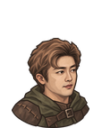
afeix_p04_mocha_dead保留既有脸型、发型与衣装，头部、胸肩和视线统一朝画面右侧；实机验收范围见朝向测试记录。
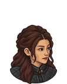
afeix_p04_bottle_dead保留既有脸型、发型与衣装，头部、胸肩和视线统一朝画面右侧；实机验收范围见朝向测试记录。

afeix_p04_shuaizi_dead保留既有脸型、发型与衣装，头部、胸肩和视线统一朝画面右侧；实机验收范围见朝向测试记录。
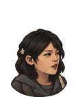
afeix_p04_lili_dead按用户指定李李参考重绘短棕发、温和眉眼与足球发卡；简洁素装，无固定弓箭。透明朝右胸像，已检查原尺寸及原版装备叠加，未实机验收。
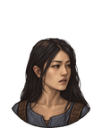
afeix_p04_xiaoyueya_dead按用户照片重绘黑色长发、清秀椭圆脸与自然眉眼，替换旧蓝发造型；朝右，完整颈部。

afeix_p04_yuchujiu_dead保留既有脸型、发型与衣装，头部、胸肩和视线统一朝画面右侧；实机验收范围见朝向测试记录。

afeix_p04_xiaoyubeike_dead保留既有脸型、发型与衣装，头部、胸肩和视线统一朝画面右侧；实机验收范围见朝向测试记录。
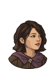
afeix_p04_wangduidui_dead保留既有脸型、发型与衣装，头部、胸肩和视线统一朝画面右侧；实机验收范围见朝向测试记录。
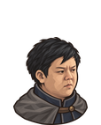
afeix_p04_laocai_dead保留既有脸型、发型与衣装，头部、胸肩和视线统一朝画面右侧；实机验收范围见朝向测试记录。
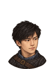
afeix_p04_yanzi_dead内置 ImageGen 按仓库 Sylar 活动海报右侧人物绘制，黑短发与本人五官，短肩剑盾旅装。
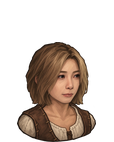
afeix_p04_tiantong_dead按用户照片中央人物重绘浅棕短波波头、圆润脸颊和眼睛；移除旧眼镜与深色长发。
afeix_p04_xiaoning_dead保留既有脸型、发型与衣装，头部、胸肩和视线统一朝画面右侧；实机验收范围见朝向测试记录。
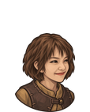
afeix_p04_xiaopangxu_dead保留既有脸型、发型与衣装，头部、胸肩和视线统一朝画面右侧；实机验收范围见朝向测试记录。
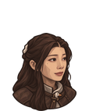
afeix_p04_dae_dead保留既有脸型、发型与衣装，头部、胸肩和视线统一朝画面右侧；实机验收范围见朝向测试记录。

afeix_p04_manyuemei_dead保留既有脸型、发型与衣装，头部、胸肩和视线统一朝画面右侧；实机验收范围见朝向测试记录。
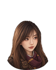
afeix_p04_xiaohani_dead内置 ImageGen 按用户罗一可照片绘制，人类长发、侧刘海与软面颊，梅紫围巾和小粮袋。

afeix_p04_keke_dead根据用户提供的两张可可照片重绘圆润紧凑脸型、柔和眉眼、小巧鼻唇、薄刘海与低双马尾；保留红褐围巾、棕皮肩衣、月形搭扣、朝右姿态和完整下颌短颈。已检查游戏尺寸及装备叠加，尚未实机验收。

afeix_p04_yuxiang_dead保留既有脸型、发型与衣装，头部、胸肩和视线统一朝画面右侧；实机验收范围见朝向测试记录。

afeix_p04_tongzhu_dead保留既有脸型、发型与衣装，头部、胸肩和视线统一朝画面右侧；实机验收范围见朝向测试记录。
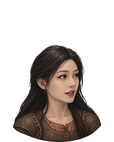
afeix_p04_meiya_dead根据用户提供的四张美伢正侧面照片校准长椭圆脸、细弧眉、自然杏眼、鼻形与轻微笑意；收敛旧稿粗眉和噘嘴。保留近中分长黑发、朝右姿态、棕皮肩衣和完整下颌颈部；不将帽子画入基础层。
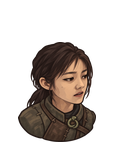
afeix_p04_wanshe_dead保留既有脸型、发型与衣装，头部、胸肩和视线统一朝画面右侧；实机验收范围见朝向测试记录。
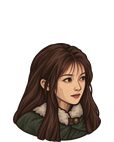
afeix_p04_tutu_dead保留既有脸型、发型与衣装，头部、胸肩和视线统一朝画面右侧；实机验收范围见朝向测试记录。

afeix_p04_naigai_dead按四张用户照片校正奶盖的齐下巴黑色短发、柔和脸型与眉眼唇形；保留棕色短披肩。透明朝右胸像，已检查原尺寸及原版装备叠加，未实机验收。

afeix_p04_xiaojie_dead保留既有脸型、发型与衣装，头部、胸肩和视线统一朝画面右侧；实机验收范围见朝向测试记录。

afeix_p04_bula_dead保留既有脸型、发型与衣装，头部、胸肩和视线统一朝画面右侧；实机验收范围见朝向测试记录。

afeix_p04_suwa_dead保留既有脸型、发型与衣装，头部、胸肩和视线统一朝画面右侧；实机验收范围见朝向测试记录。

afeix_p04_qianhan_dead保留既有脸型、发型与衣装，头部、胸肩和视线统一朝画面右侧；实机验收范围见朝向测试记录。

afeix_p04_wangdazhi_dead保留既有脸型、发型与衣装，头部、胸肩和视线统一朝画面右侧；实机验收范围见朝向测试记录。
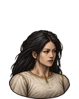
afeix_p04_yaoyaoya_dead按用户要求将露肩裹胸改为遮住双肩、胸口和上臂的米白色素衣；保留黑长发、面容、朝右姿态及原画风。
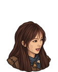
afeix_p04_yangmiemie_dead保留既有脸型、发型与衣装，头部、胸肩和视线统一朝画面右侧；实机验收范围见朝向测试记录。

afeix_p04_songnuanyang_dead保留既有脸型、发型与衣装，头部、胸肩和视线统一朝画面右侧；实机验收范围见朝向测试记录。
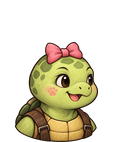
afeix_p04_xiaogui_dead按两张用户吉祥物图及明确要求重绘：保留醒目亮粉蝴蝶结，提亮浅苹果绿皮肤和奶黄色腹甲，圆脸笑容、绿色斑纹、粉色爪印。朝右，保留龟壳和皮带；不加入直播设备与球队元素。蝴蝶结在游戏尺寸可辨认；全罩头盔右缘仍有龟脸外露，尚未实机验收。